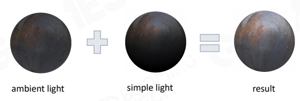
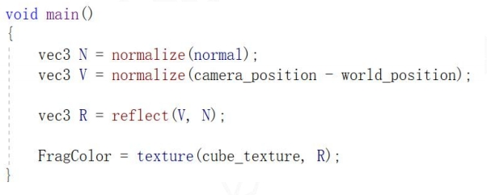
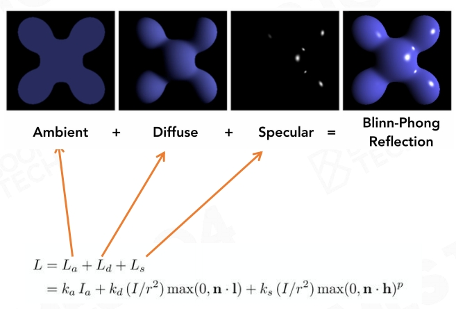
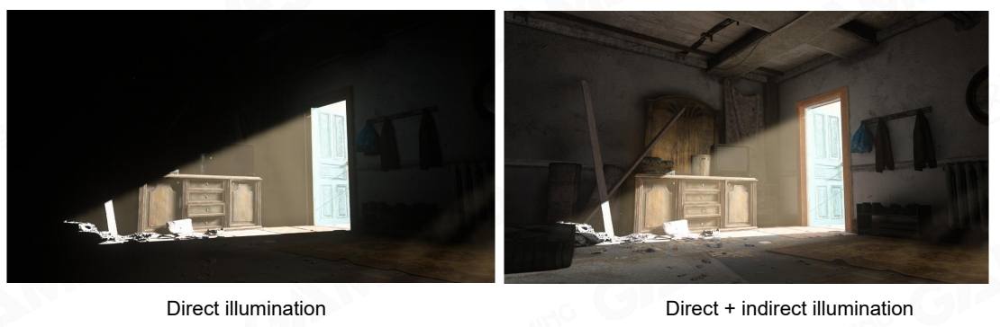
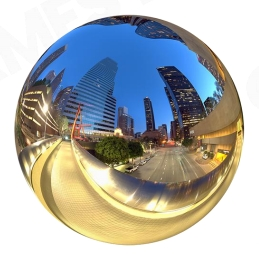
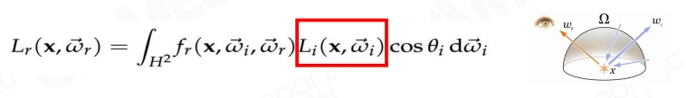

Simple Light Solution
P12
Simple Light Solution
- Using simple light source as main light
- Directional light in most cases
- Point and spot light in special case
- Using ambient light to hack others
- A constant to represent mean of complex hemisphere irradiance

假设简单场景：(1) 只有一个主光源。(2) 自定义一个常数环境光。
ambient light：环境光，即去掉主光源后剩下的光。
P13
Environment Map Reflection
- Using environment map to enhance glossary surface reflection
- Using environment mipmap to represent roughness of surface

Early stage exploration of image- based lighting

增加物体反射光线的效果。
高光：入射光方向·反射方向·物体表面法线方向重合。
方法：六面体环境贴图 cudemap
P14
Math Behind Light Combo
- Main Light
- Dominant Light
- Ambient Light
- Low-frequency of irradiance sphere distribution
- Environment Map
- High-frequency of irradiance sphere distribution
本质上，把一个半球形的光场模拟为均匀的环境光。环境光中高频内容用 envirnment map 表达。
P15
Blinn-Phong Materials

光可叠加原理。
P16
Problem of Blinn-Phong
- Not energy conservative
- Unstable in ray-tracing

- Hard to model complex realistic material

P17
Shadow
- Shadow is nothing but space when the light is blocked by an opaque object
- Already obsolete method
- planar shadow
- shadow volume
- projective texture

P18
从光的视角渲染一张场景深度图。
判断真实视角下的每一个点在光视角下是否可见。若不可见，则为阴影。
P19
Problem of Shadow Map

深度图的采样频率和渲染的采样频率一致，会引发 artifacts.
P20
Basic Shading Solution
- Simple light + Ambient
- dominent light solves No.1b
- ambient and EnvMap solves No.3 challanges
- Blinn-Phong material
- solve No.2 challange
- Shadow map
- solve No.1a challange
P21
Cheap, Robust and Easy Modification
P26
Pre-computed Global Illumination
假设场景中90％的东西是不动的。
空间换时间。
G＝全局光照＝直接光照＋间接光照
ambient 可以做间接光照效果，但会使整个场景统一变亮，看上去会有平面感。
P27
Why Global Illumination is Important

P28
How to Represent Indirect Light
- Good compression rate
- We need to store millions of radiance probes in a level
- Easy to do integration with material function
- Use polynomial calculation to convolute with material BRDF


P31
Spherical Harmonics
$$ Y_{lm}(\theta ,\phi )=N_{lm}P_{lm}(\cos \theta )e^{Im\phi } $$